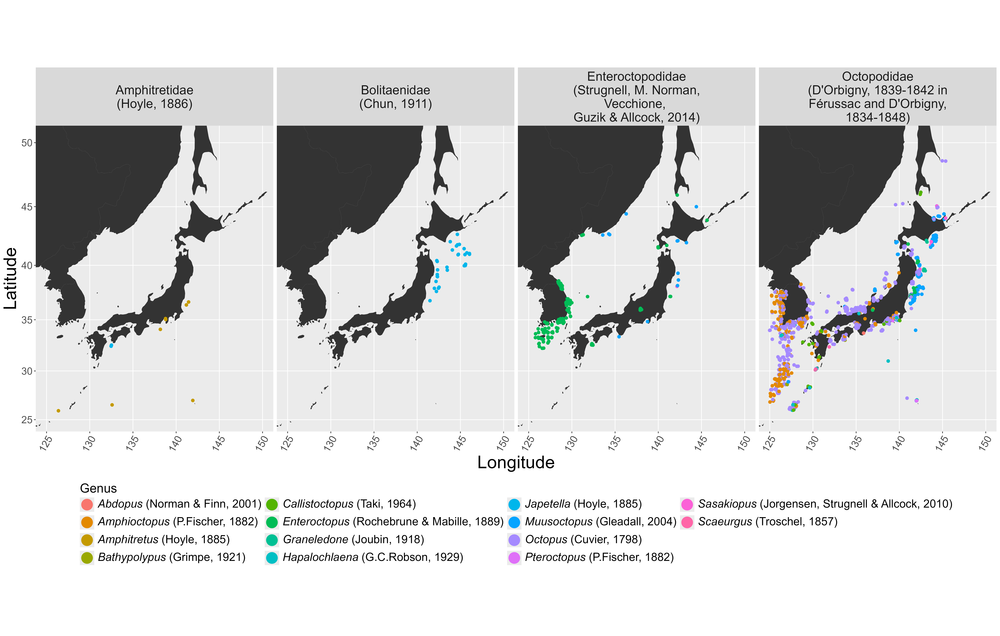

Description
Several data sets exist in datamuseum which have been
processed from their originally accessioned forms into digestible
formats to exemplify the workflow made possible by the package. These
are from the Global Biodiversity Information Facility (GBIF),
Invert-E-Base (InvBase), the Biological Information System for Marine
Life (BISMAL), Ocean Biodiversity Information System (OBIS), and one
data set obtained by direct request from the National Museum of Nature
and Science, Japan (NSMT).
The individual Japan-focused data sets can be found under Example Data at the Reference page.
Using the following packages:
Individual Data Sets
The raw and trimmed forms of each data set can be found on Github.
Global Biodiversity Information Facility (GBIF) Data
#Raw Data
GBIF_raw <- read.csv("GBIF_Octopodoidea_raw.csv") #88256 Observations
#Trimmed Data
GBIF_clean <- GBIF_raw[ -c(1:7, 11:15, 24:32, 34:36, 38, 40:50)]
GBIF_clean <- GBIF_clean[ -c(7, 9)] #88256 Observations
#Also available on Github as GBIF_Octopodoidea_trim.csv
#Japan Octopus Data
GBIF_Japan <- latlong_range(GBIF_clean, "decimalLatitude", "decimalLongitude",
25, 50, 125, 150, drop_na = TRUE) %>% dplyr::rename(
"Prefecture" = "stateProvince",
"Precise Location" = "locality", "Longitude" = "decimalLongitude", "Latitude" = "decimalLatitude",
"Year" = "year", "Genus" = "genus", "Country" = "countryCode",
"SciName" = "species", "Family" = "family","Source" = "institutionCode") #2145 Observations
GBIF_Japan <- replace(GBIF_Japan, GBIF_Japan=='', NA)
GBIF_Japan <- GBIF_Japan %>%
filter(!is.na(Source) & !is.na(Family) & !is.na(Genus) & !is.na(SciName)
& !is.na(Year)) #798 Observations
GBIF_Japan$SciName <-sub("\\s+(?:NA)$", "", GBIF_Japan$SciName) #798 ObservationsThe refined GBIF data, cleaned to Japan-adjacent waters and
superfamily Octopodoidea, can be found at: GBIF_Japan.
The GBIF_Japan data set was refined from the following occurrence download:
Global Biodiversity Information Facility (GBIF). GBIF.org (30 March 2026) GBIF Occurrence Download. https://www.gbif.org. doi: 10.15468/dl.2379hj
Invert-E-Base (InvBase) Data
#Raw Data
InvBase_raw <- read.csv("InvBase_Octopodoidea_raw.csv") #22608 Observations
#Trimmed Data
InvBase_clean <- InvBase_raw[ -c(1, 3:6, 8:13, 15:17, 19, 21:38, 40:62, 64:70, 72, 75:79, 82:103)] #22608 Observations
#Also available on Github as InvBase_Octopodoidea_trim.csv
#Japan Octopus Data
InvBase_Japan <- latlong_range(InvBase_clean, "decimalLatitude", "decimalLongitude",
25, 50, 125, 150, drop_na = TRUE) %>% dplyr::rename(
"Prefecture" = "stateProvince", "Country" = "country",
"Precise Location" = "county", "Longitude" = "decimalLongitude", "Latitude" = "decimalLatitude",
"Year" = "year", "Genus" = "genus", "Source" = "institutionCode", "Family" = "family"
) #50 Observations
ClaSciNameInv <- paste(InvBase_Japan$Genus, InvBase_Japan$specificEpithet, sep=' ')
InvBase_Japan <- cbind(InvBase_Japan, ClaSciNameInv)
InvBase_Japan <- replace(InvBase_Japan, InvBase_Japan=='', NA)
InvBase_Japan <- InvBase_Japan %>%
filter(!is.na(Source) & !is.na(Family) & !is.na(Genus) & !is.na(specificEpithet)
& !is.na(Year)) #43 Observations
InvBase_Japan <- InvBase_Japan[ -c(5)] %>% dplyr::rename(
"SciName" = "ClaSciNameInv")
InvBase_Japan$SciName <-sub("\\s+(?:NA)$", "", InvBase_Japan$SciName) #43 ObservationsThe refined InvBase data, cleaned to Japan-adjacent waters and
superfamily Octopodoidea, can be found at: InvBase_Japan
Invert-E-Base. Downloaded 30 March 2026. https://invertebase.org
Biological Information System for Marine Life (BISMAL) Data
#Raw Data
BISMAL_raw <- read.csv("BISMAL_Octopodoidea_raw.csv") #2487 Observations
#Trimmed Data
BISMAL_clean <- BISMAL_raw[ -c(1:11, 13:18, 20:21, 23:49, 51:67, 67, 70,
72:79, 82:99, 100:104, 106:108, 110, 112:116)] #2487 Observations
#Also available on Github as BISMAL_Octopodoidea_trim.csv
#Japan Octopus Data
BISMAL_Japan <- latlong_range(BISMAL_clean, "decimalLatitude", "decimalLongitude",
25, 50, 125, 150, drop_na = TRUE) %>% dplyr::rename( "Prefecture" = "stateProvince",
"Precise Location" = "locality", "Longitude" = "decimalLongitude", "Latitude" = "decimalLatitude",
"Year" = "year", "Genus" = "genus", "Country" = "country", "Source" = "institutionCode", "Family" = "family") #1507 Observations
ClaSciNameBISMAL <- paste(BISMAL_Japan$Genus, BISMAL_Japan$specificEpithet, sep=' ')
BISMAL_Japan <- cbind(BISMAL_Japan, ClaSciNameBISMAL)
BISMAL_Japan <- replace(BISMAL_Japan, BISMAL_Japan=='', NA)
BISMAL_Japan <- BISMAL_Japan %>%
filter(!is.na(Source) & !is.na(Family) & !is.na(Genus) & !is.na(specificEpithet)
& !is.na(Year)) #473 Observations
BISMAL_Japan <- BISMAL_Japan[ -c(12)] %>% dplyr::rename("SciName" = "ClaSciNameBISMAL")
BISMAL_Japan$SciName <-sub("\\s+(?:NA)$", "", BISMAL_Japan$SciName) #473 ObservationsThe refined BISMAL data, cleaned to Japan-adjacent waters and
superfamily Octopodoidea, can be found at: BISMAL_Japan
Biological Information System for Marine Life (BISMAL). Downloaded 30 March 2026. https://www.godac.jamstec.go.jp/bismal/e/
Ocean Biodiversity Information System (OBIS)
#Raw Data
OBIS_raw <- read.csv("OBIS_Octopodoidea_raw.csv") #58526 Observations
#Trimmed Data
OBIS_clean <- OBIS_raw[ -c(0:20, 22:28, 30:39, 41, 44:63, 65:74, 76:100, 102:111, 114:127, 129:203, 205:209,
211:282)] #58526 Observations
#Also available on Github as OBIS_Octopodoidea_trim.csv
#Japan Octopus Data
OBIS_Japan <- latlong_range(OBIS_clean, "decimalLatitude", "decimalLongitude",
25, 50, 125, 150, drop_na = TRUE) %>% dplyr::rename(
"Prefecture" = "stateProvince", "Country" = "country",
"Precise Location" = "locality", "Longitude" = "decimalLongitude", "Latitude" = "decimalLatitude",
"Year" = "date_year", "Source" = "institutionCode", "Family" = "family", "Genus" = "genus",
"SciName" = "species") #859 Observations
OBIS_Japan <- replace(OBIS_Japan, OBIS_Japan=='', NA)
OBIS_Japan <- OBIS_Japan %>%
filter(!is.na(Source) & !is.na(Family) & !is.na(Genus) & !is.na(SciName)
& !is.na(Year)) #698 Observations
OBIS_Japan$SciName <-sub("\\s+(?:NA)$", "", OBIS_Japan$SciName) #668 Observations
OBIS_Japan <- OBIS_Japan[ -c(9)]The refined OBIS data, cleaned to Japan-adjacent waters and
superfamily Octopodoidea, can be found at: OBIS_Japan
Ocean Biodiversity Information System (OBIS). Downloaded 30 March 2026. https://obis.org
National Museum of Nature and Science, Japan (NSMT)
#Raw Data
NSMT_raw <- read.csv("NSMT_Octopodoidea_raw.csv") #870 Observations
#Trimmed Data
NSMT_clean <- NSMT_raw[ -c(5, 9:12, 16:18, 22:23)] #870 Observations
#Also available on Github as NSMT_Octopodoidea_trim.csv
#Japan Octopus Data
NSMT_Japan <- latlong_range(NSMT_clean, "Latitude", "Longitude",
25, 50, 125, 150, drop_na = TRUE) %>% dplyr::rename(
"Prefecture" = "Region", "Precise Location" = "Previse.loc.",
"Source" = "Group.Abb."
) #695 Observations
NSMT_Japan <- replace(NSMT_Japan, NSMT_Japan=='', NA)
NSMT_Japan <- NSMT_Japan %>%
filter(!is.na(Source) & !is.na(Family) & !is.na(Genus) & !is.na(Species)
& !is.na(Year))
ClaSciNameNSMT <- paste(NSMT_Japan$Genus, NSMT_Japan$Species, NSMT_Japan$Subspecies, sep=' ')
NSMT_Japan <- cbind(NSMT_Japan, ClaSciNameNSMT) %>% dplyr::rename(
"SciName" = "ClaSciNameNSMT")
NSMT_Japan$SciName <-sub("\\s+(?:NA)$", "", NSMT_Japan$SciName)
NSMT_Japan <- NSMT_Japan[ -c(6,7)]The refined NSMT data, cleaned to Japan-adjacent waters and
superfamily Octopodoidea, can be found at: NSMT_Japan
National Museum of Nature and Science, Japan (NSMT). Data obtained directly from the museum, early 2024. https://www.kahaku.go.jp/english/
Concatenated Data Sets
These data sets, made from combining the Japan-focused data, can be found under Example Data at the Reference page.
Japan Octopodoidea Data Set, museum
#Combined Japan Octopus Data
museum <- rbind(
InvBase_Japan %>% mutate(`Data Frame` = "InvBase"),
GBIF_Japan %>% mutate(`Data Frame` = "GBIF"),
NSMT_Japan %>% mutate(`Data Frame` = "NSMT"),
OBIS_Japan %>% mutate(`Data Frame` = "OBIS"),
BISMAL_Japan %>% mutate(`Data Frame` = "BISMAL")
) #2707 Observations
museum <- deduplicate(museum, "catalogNumber", drop_na = TRUE) #143 duplicate rows removed; 608 rows removed due to missing ID. 1956 Observations
museum_dupes <- attr(museum, "duplicates") #1268 Observations, 638 FALSE
museum <- duplicate(museum, "individualCount") #Duplication increased count from 1894 Observations to 2633 ObservationsThe concatenated Japanese Octopodoidea data, with repeat or absent
catalog numbers removed and specimen lots duplicated, can be found at:
museum
Japan Octopodoidea Data Set, museum_taxon
#Taxonomized Japan Octopus Data
taxon_column(museum, output = "list")
taxon_columntype(museum, c(Family, Genus, SciName))
museum_clean <- taxon_cleaner(museum, SciName, in_place = TRUE, drop_na = TRUE) #2222 Observations
museum_clean <- museum_clean %>%
mutate(SciName = case_when(
SciName == "Octopus vulgaris" ~ "Octopus sinensis",
TRUE ~ SciName
))
museum_split <- taxon_split(museum_clean, SciName, genus = "Genus2", epithet = "Epithet")
#If Genus and epithet columns needed to be created from a binomial species column
museum_combine <- taxon_combine(museum_split, genus = "Genus2", epithet = "Epithet", new_column = "SciName2")
#If a binomial species column needed to be created from Genus and epithet columns
museum_valid <- taxon_validate(museum_clean, SciName, update_related = TRUE)
valid_report <- attr(museum_valid, "validation_report")
museum_check <- taxon_spellcheck(museum_valid, c(SciName), update = TRUE,
validation_report = valid_report)
check_report <- attr(museum_check, "spellcheck_report")
museum_check <- museum_check %>%
mutate(across(everything(), ~ str_replace_all(.x, "Pinnoctopus", "Callistoctopus")))
museum_taxon <- taxon_add(museum_check, SciName, rank = c("order", "phylum"),
author_year = FALSE, sort = TRUE)
add_report <- attr(museum_taxon, "add_report")
museum_taxon <- taxon_cite(museum_taxon, c(Family, Genus, SciName))
cite_report <- attr(museum_taxon, "cite_report")
museum_taxon <- museum_taxon %>%
filter(SciName != "Muusoctopus small in mature") %>%
mutate(Family_cite = case_when(
Family_cite == "Enteroctopodidae" ~ "Enteroctopodidae (Strugnell, M. Norman, Vecchione, Guzik & Allcock, 2014)",
TRUE ~ Family_cite
))
museum_taxon <- italicize(museum_taxon, c(Genus_cite, SciName_cite))The Japanese Octopodoidea data, with updates to its included
taxonomic data based on functions like taxon_validate(),
can be found at: museum_taxon
A map generated from museum_taxon
is shown below:
world_map <- map_data("world")
japan <- map_data("world", region="japan")
family_labels <- c(
"Octopodidae (D'Orbigny, 1839-1842 in Férussac and D'Orbigny, 1834-1848)" = "Octopodidae\n(D'Orbigny, 1839-1842 in\nFérussac and D'Orbigny,\n1834-1848)",
"Amphitretidae (Hoyle, 1886)" = "Amphitretidae\n(Hoyle, 1886)",
"Enteroctopodidae (Strugnell, M. Norman, Vecchione, Guzik & Allcock, 2014)" = "Enteroctopodidae\n(Strugnell, M. Norman,\nVecchione, \nGuzik & Allcock, 2014)",
"Bolitaenidae (Chun, 1911)" = "Bolitaenidae\n(Chun, 1911)"
)
lon_min <- 125
lon_max <- 150
lat_min <- 25
lat_max <- 50
museum_taxon$Longitude <- as.numeric(museum_taxon$Longitude)
museum_taxon$Latitude <- as.numeric(museum_taxon$Latitude)
octopodoidea_japan <- ggplot(data = world_map, aes(long, lat)) +
geom_polygon(aes(group = group)) +
coord_map(xlim = c(lon_min, lon_max), ylim = c(lat_min, lat_max)) +
geom_point(data = museum_taxon,
aes(x = Longitude, y = Latitude, color = Genus_cite_italic),
size = 2,
position = position_jitter(width = .1, height = .1)) +
labs(x = "Longitude", y = "Latitude", color = "Genus") +
scale_colour_discrete(
drop = TRUE,
limits = levels(factor(museum_taxon$Genus_cite_italic)),
labels = function(x) lapply(x, function(i) parse(text = i))
) +
guides(
size = "none",
color = guide_legend(override.aes = list(size = 8), ncol = 4)
) +
theme(
legend.position = "bottom",
legend.title.position = "top",
legend.title = element_text(size = 20),
legend.text = element_text(size = 18),
strip.text = element_text(size = 20),
text = element_text(size = 22),
axis.title = element_text(size = 28),
axis.text.x = element_text(size = 16, angle = 60, hjust = 1),
axis.text.y = element_text(size = 16)
) +
facet_wrap(~Family_cite, nrow = 1, labeller = as_labeller(family_labels))
Octopodoidea occurrences in Japan by family and genus.